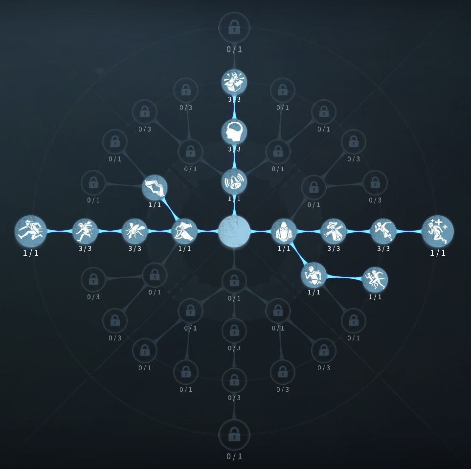
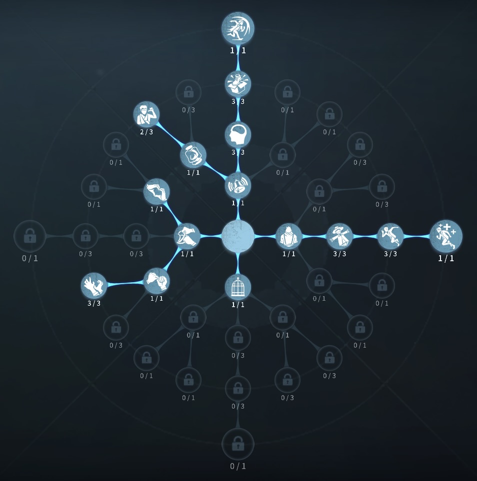

マジシャンの評価
ステッキで追跡不可能に
外在特質と特徴
特質1:マジック
・マジシャンはステッキを3つ持っており、ステッキを使うことで2秒間姿を透明にして移動速度が40％上昇し、その場に約20秒間マジシャンの幻影を残す。・ハンターが幻影を破壊してから一定時間はサバイバー全員にハンターのシルエットが表示される。
・マジックステッキによる透明中に攻撃を受けると恐怖の一撃が発生する効果を無効化する。ただし透明中に解読、板・窓操作、救助を行って攻撃を受けた場合は通常通り恐怖の一撃が発生する。
特質2:機敏な手
・暗号機の調整発生率が20％低下し、調整の成功判定の範囲が20％増加する。特質3:真偽不明
・マジシャンは一度だけ救助されたときに椅子に残像を残し、2秒間姿を透明にすることができる。・真偽不明が発動した時のマジシャンの健康状態の表示は幻影が消えるまでロケットチェアに拘束された状態のままになる。
特徴
マジシャンは使いやすく、ステッキを使ったら消えると単純で分かりやすい。
幻影の当たり判定を理解しておくことが、大事です。
マジシャンの残った幻影でとうせんぼをしたり、消えて隠密をするといった応用もきく。
初心者にはとっておきのサバイバー！
基本的な立ち回り方
1. 追われた時
ステッキを使い、
存在感がたまる前に延ばしに延ばしてください。
ハンターの攻撃範囲内でのステッキはリスクが伴うので早めに使うのも一つ
またステッキ使用後にどの方向に逃げるのかがとても大事です。
ハンターの癖や体の向きなど見て判断しよう。
セカンドチェイスに残しておくのも強いです
2. 追われない時
解読に専念しよう!
無理に関与するのは控えよう！
救助の際はステッキを使い、無傷救助を狙ってもいいかもしれません。
おすすめの内在人格
膝蓋腱反射型人格
この内在人格は、ウェーバーの法則に3振することでファーストチェイスの事故無くし、膝蓋腱反射で距離をとる人格

フライホイール型人格
この内在人格は、生存に3振で風船もがきをワンちゃん狙い、癒合で治療をもらいやすくする人格


みんなのコメント